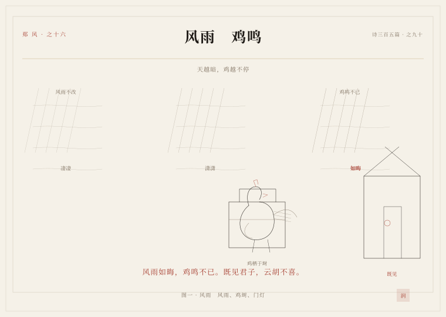
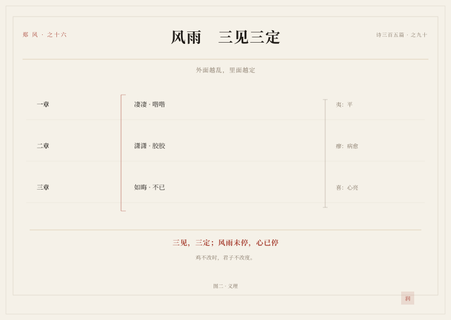

第九十篇 风雨
郑风 · 之十六 SJ090
朗读 · 普通话
依经文原文朗读，章次不读出；配古琴底乐，不改速、不加拖腔。全库同一音色（豆包 TTS），非播音员录制。
一 解题
诗三判：
- 谁在说：一个在风雨里等人、终于等到的人。她先听风雨，再听鸡鸣，最后看见君子。
- 说什么事：三章。风雨由“凄凄”到“潇潇”再到“如晦”，鸡鸣由“喈喈”到“胶胶”再到“不已”；天越暗，鸡越不停；人一到，心就定。
- 为何编在此：郑风之十六。089 写“近而不得”，090
写“终于得见”。一个门里门外，一个风雨里外。
《毛序》：“《风雨》，思君子也。乱世则思君子，不改其度焉。”
朱子《诗集传》：“赋也。凄凄、寒凉之气。喈喈、鸡鸣之声。风甫晦冥、盖淫奔之时。君子、指所期之男子也。夷、平也。○淫奔之女言当此之时、见其所期之人而心悦也。”
本库的看法：《风雨》是一首把“见”写成“定”的诗。
前三句都在动：风雨动，鸡鸣动，天光动；只有“既见君子”一落，心才不动。“云胡不夷”不是问，是定：还怎么会不平？第二章“瘳”更重，原来这是病；第三章“喜”最轻，也最真。外面的风雨没有停，里面的风雨停了。
先辨五事：“凄凄”是寒凉，不是“萋萋”；“潇潇”是风雨急疾，不是“萧萧”；“胶胶”是鸡声，不是“胶粘”；“瘳”是病愈，不是“瘥”；“埘”是凿墙栖鸡，“桀”是木杙。
二 经文
第一章
风雨凄凄，鸡鸣喈喈。
既见君子，云胡不夷。
第二章
风雨潇潇，鸡鸣胶胶。
既见君子，云胡不瘳。
第三章
风雨如晦，鸡鸣不已。
既见君子，云胡不喜。
分章：三章，章四句。
三 韵读
- 一章：凄、喈、夷，脂部；三句一韵。
- 二章：潇、胶、瘳，幽宵旁转；朱子“胶叶音骄”“瘳叶怜萧反”。
- 三章：晦、已、喜，之部；三句一韵。
读法：脂部细，幽部沉，之部收。声音由细到沉，再到定；正合风雨到天明。
四 字义与名物
- 凄凄：寒凉。潇潇：风雨急疾。如晦：暗得像夜。
- 喈喈：鸡鸣声。胶胶：鸡鸣声；一说“胶胶”为声之粗。不已：不停。
- 君子：所等的人；朱子指“所期之男子”。夷：平、悦。瘳：病愈。喜：喜。
- 埘：凿墙做成的鸡窝。桀：木杙，鸡栖的木桩。
五 今译
风雨凄凄冷冷，鸡鸣喈喈。已经见到君子，怎么还会心不平？
风雨潇潇洒洒，鸡鸣胶胶。已经见到君子，怎么还会病不好？
风雨暗得像夜，鸡鸣不停。已经见到君子，怎么还会不喜？
六 章旨
- 一章：写“凄凄”与“夷”。风雨初起，心先求平；见一面，平一分。
- 二章：写“潇潇”与“瘳”。风雨更急，原来这是病；见一面，病去一层。
- 三章：写“如晦”与“喜”。天全暗，鸡不停；见一面，心全亮。
- 总收：风雨不改其度，鸡鸣不改其时；一见而定。
外面越乱，里面越定。
七 诗教
- 兴：以风雨鸡鸣起兴。先写声，再写人；声越乱，见越定。
- 观：观“不改其度”。鸡在风雨里仍按时鸣；人能不能在乱世里仍守其度？
- 群：等人不是一个人的事；风雨里有鸡，有门，有君子；“既见”是两个人把乱关在门外。
- 怨：诗里没有怨，只有等。等到了，怨就化成喜。
八 分寸与边界
- 不可把“凄凄”读成“萋萋”。凄凄是寒凉；一读成草盛，风雨就没了。
- 不可把“潇潇”读成“萧萧”。潇潇是雨急；一读成风声，鸡鸣就孤零零。
- 不可把“胶胶”读成“胶粘”。它是鸡声；一读成物性，诗就成了胶。
- 不可把“瘳”读成“瘥”。瘳是病愈；一读成小病，第二章就轻了。
- 不可把“夷”只读成“平”。它有“悦”义；一读成水平，心就没有起伏。
九 存疑
- 诗旨：毛序“思君子，不改其度”；朱子“淫奔之女见所期”。一治一情；本库两存，以“见而定”读。
- “君子”：毛传指“君子”；朱子指“所期之男子”。从朱子，才与“既见”相接。
- “胶胶”：鸡声；一说“胶胶”为“声之粗”。两读相近。
- “夷”：平、悦；毛传“说”），朱子“平”。从“平”，才见心归位。
- 作者与年代：序不言作者；朱子以为“淫奔”。无确证。
十 跨典
- 《论语·子罕》：“岁寒，然后知松柏之后凋也。”——风雨如晦，正见“不改其度”。
- 《论语·泰伯》：“临大节而不可夺也。”——鸡鸣不已，是守时；君子不改，是守度。
- 《孟子·滕文公下》：“富贵不能淫，贫贱不能移，威武不能屈。”——外面的风雨，移不动里面的人。
- 《诗本音》：一章凄、喈、夷脂部，二章潇、胶、瘳幽部，三章晦、已、喜之部，见卷三。
十一 双卡与图
双卡七对：
| 凄凄（寒凉） |
凄凄（萋萋草盛） |
| 潇潇（雨急） |
潇潇（萧萧风声） |
| 喈喈（鸡鸣） |
喈喈（鸟叫） |
| 胶胶（鸡声） |
胶胶（胶粘） |
| 夷（平、悦） |
夷（平坦） |
| 瘳（病愈） |
瘳（瘥，小病） |
| 如晦（暗如夜） |
如晦（晦日） |

图一 · 风雨 风雨、鸡埘、如晦

图二 · 风雨 三见、三定
读图三处：
- 风雨三层：图一左风雨斜线，右天色一层比一层暗；凄凄、潇潇、如晦，是三层天。
- 鸡在埘上：图一中段一只鸡立在土墙鸡窝上，头朝风雨，尾不垂；鸡不躲，才见“不已”。
- 门内一盏灯：图一右下门内一点朱色灯，不画人；灯是“既见”，人不必画。